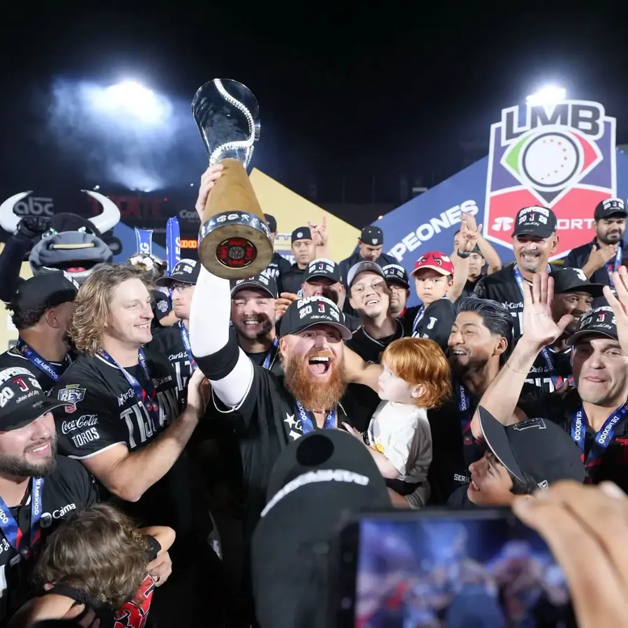

2026: campeones en casa
El 15 de septiembre de 2026 vencieron 2-0 a los Olmecas de Tabasco en el sexto juego y ganaron la Serie del Rey 4-2, ante 17,434 aficionados en el Toros Mobil Park. Gilberto Celestino produjo las dos carreras con un sencillo en la quinta entrada, y Hernán Pérez fue el Jugador Más Valioso de la serie. Igual que en 2021, el título llegó un 15 de septiembre y en Tijuana.